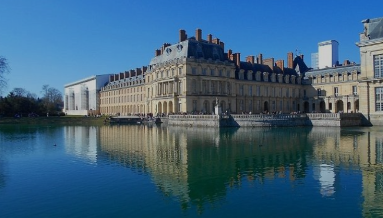

Creación del castillo
Siglo XIIEl castillo de Fontainebleau data del siglo XII, marcando el surgimiento de este lugar histórico como emblemática emblemática residencia real. Construido originalmente como fortaleza, el transformó gradualmente en residencia real bajo el reinado de reinado de Francisco I en el siglo XVI. Las primeras fases de fueron iniciadas por Luis VII a mediados del siglo XII, sentando las bases de lo que se convertiría en un lugar de poder y prestigio. Sin embargo, fue realmente bajo Francisco I, el castillo experimentó una importante metamorfosis arquitectónica, con la introducción del estilo renacentista y la adición de suntuosas como la famosa ala Francisco I. El castillo de Fontainebleau es, por tanto, el fruto de siglos de evolución arquitectónica. reflejo de la historia y los gustos de los sucesivos soberanos soberanos que han contribuido a su grandeza.

Francisco I
1515 - 1547El reinado de Francisco I, que duró de 1515 a 1547, marcó profundamente la historia de Francia. marcó profundamente la historia de Francia, tanto política como culturalmente. tanto política como culturalmente. Francisco I es considerado a menudo como el primer rey del Renacimiento en Francia, y su mecenazgo de las artes tuvo una influencia en el desarrollo del arte y la cultura del país. y la cultura del país. Bajo su reinado, el castillo de Fontainebleau en una suntuosa residencia, con la introducción del estilo renacentista italiano. estilo renacentista italiano. Francisco I también fomentó los intercambios culturales culturales con Italia, invitando a artistas como Leonardo da Vinci Leonardo da Vinci a su corte. En el frente político, Francisco I participó en grandes conflictos, especialmente en la Guerra de Italia, en la que en la que compitió con Carlos V. A pesar de los reveses militares, su reinado consolidó el poder real en Francia y cimientos culturales que han perdurado a lo largo de los siglos. En consecuencia, el reinado de Francisco I sigue siendo un periodo clave de la historia de Francia marcado por el equilibrio entre ambiciones políticas y logros artísticos. y los logros artísticos.

Corazón de la despedida de Enrique IV
1589 - 1610Enrique IV, rey de Francia de 1589 a 1610, dejó una huella significativa en el castillo de Fontainebleau al ordenar la construcción de la construcción del Cour des Adieux. Este patio, construido a principios del siglo XVII, reviste una gran importancia simbólica. Enrique IV ansioso por consolidar su reinado y restablecer la estabilidad en el reino reino tras las Guerras de Religión, eligió Fontainebleau como lugar para esta iniciativa. La Cour des Adieux estaba destinada a marcar la salida solemne del Rey y simbolizar su autoridad indiscutible. autoridad. El diseño arquitectónico de este patio refleja una combinación única de simetría y grandeza, encarnando la idea de la autoridad real. autoridad real, al tiempo que permite una despedida memorable. Por ejemplo, La orden de Enrique IV para la construcción de la Cour des Adieux en Fontainebleau atestigua su preocupación por consolidar el poder real su reinado en la historia arquitectónica y simbólica del castillo. historia del castillo.

La abdicación de Napoleón
1814La abdicación de Napoleón Bonaparte en 1814 marcó un importante punto de inflexión en la historia europea. punto de inflexión en la historia europea. Tras una serie de derrotas militares, en particular la desastrosa campaña rusa de 1812 y la derrota en la batalla de Leipzig en 1813, Napoleón se vio acorralado por las coaliciones europeas. acorralado por las coaliciones europeas. Ante la creciente presión presión y la inminente invasión de Francia, Napoleón tomó la histórica histórica decisión de abdicar el 6 de abril de 1814. Este acto simbólico puso fin a su reinado imperial y allanó el camino para su exilio a Elba. La abdicación de Napoleón también abrió la puerta a un periodo de restauración monárquica en el siglo XVIII. un periodo de restauración monárquica en Francia, marcando el fin de la era napoleónica y el comienzo de una nueva fase en la la historia política de Europa.

Abdicación de Carlos X
1830La abdicación de Carlos X en 1830 fue un episodio importante de la historia francesa que marcó el fin de la Restauración. francés que marcó el final de la Restauración. Carlos X, último monarca de la rama mayor de los Borbones, había sucedido a su hermano Luis XVIII en 1824. a su hermano Luis XVIII en 1824. Su reinado estuvo marcado por políticas conservadora y autoritaria, provocando crecientes tensiones con la tensiones con la oposición liberal. La crisis alcanzó su alcanzó su clímax con las "Cuatro Ordenanzas" en julio de 1830, que restringían las libertades políticas y provocaron indignación. Ante la oposición generalizada y la revolución, Carlos X abdicó el 2 de agosto de 1830 en favor de su nieto su nieto Enrique, duque de Burdeos. Sin embargo, esta abdicación fue rápidamente considerada inválida por los revolucionarios, y la y la monarquía fue abolida. Esto condujo a el advenimiento de la monarquía de julio con el reinado de Luis Felipe, marcando un nuevo capítulo en la política francesa historia de Francia.

Ocupación alemana
1940La ocupación alemana del castillo de Fontainebleau durante la Segunda Segunda Guerra Mundial fue un capítulo oscuro en la historia de este emblemático lugar. Tras la derrota francesa en 1940, las fuerzas de ocupación alemanas invadieron Francia, y el castillo de Fontainebleau Fontainebleau, cargado de historia y simbolismo, no fue una excepción. ninguna excepción. Ocupado por las tropas nazis, el castillo se convirtió en un estratégico cuartel general estratégico para las operaciones militares alemanas operaciones en la región. Durante este periodo, el château, antaño residencia de los soberanos franceses, perdió gran parte de su perdió gran parte de su esplendor, ya que las fuerzas de ocupación utilizaron sus suntuosas sus suntuosas habitaciones para fines administrativos y militares. fines militares. La presencia alemana en el castillo de Fontainebleau representó no sólo un ataque físico a su patrimonio, sino también una violación de su prestigio histórico. La ocupación terminó con la liberación de Francia en 1944, marcando la restauración gradual del castillo durante las las décadas siguientes. Hoy en día, el castillo de Fontainebleau sigue siendo un lugar de los oscuros días de la ocupación alemana durante la Segunda Guerra Mundial. durante la Segunda Guerra Mundial.

En la actualidad
Hoy en día, el castillo de Fontainebleau sigue siendo una joya histórica joya histórica que atestigua varios siglos de historia de Francia. Patrimonio de la Humanidad por la UNESCO, el castillo es una gran atracción, que atrae a visitantes de todo el mundo. atracción, atrayendo a visitantes de todo el mundo. Sus Sus vastos jardines, elegantes salones de recepción, galerías de arte y reales galerías y pisos reales restaurados ofrecen una experiencia inmersiva experiencia inmersiva de la historia y el arte franceses. El castillo alberga una impresionante colección de muebles de época, tapices, pinturas y cuadros y objetos de arte que reflejan los gustos de los soberanos que lo han ocupado a lo largo de los siglos. Los visitantes pueden explorar los apartamentos privados de Napoleón I, la famosa escalera de herradura la famosa escalera de herradura, la capilla Saint-Saturnin y muchos otros tesoros arquitectónicos. Además de su importancia histórica, el castillo de Fontainebleau sigue utilizándose con fines oficiales, En ocasiones acoge actos culturales y diplomáticos. De este modo, el castillo de Fontainebleau sigue siendo no sólo un destino turístico esencial e ineludible, sino también un lugar de visita obligada. atracción turística, sino también un lugar vivo que perpetúa la riqueza de su pasado en el corazón de Francia.
